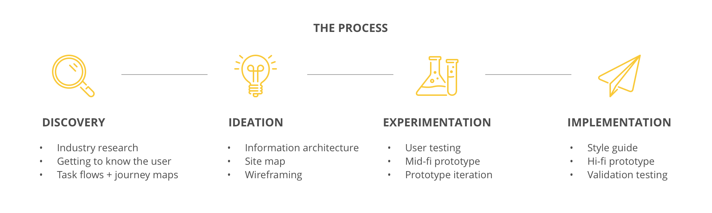
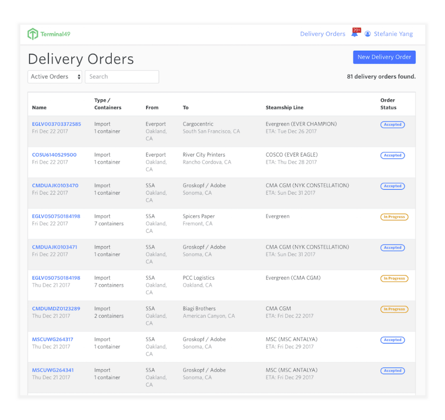
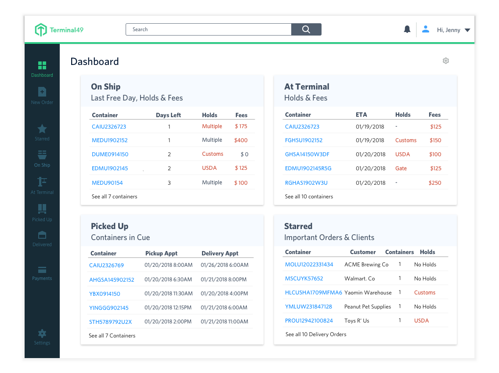
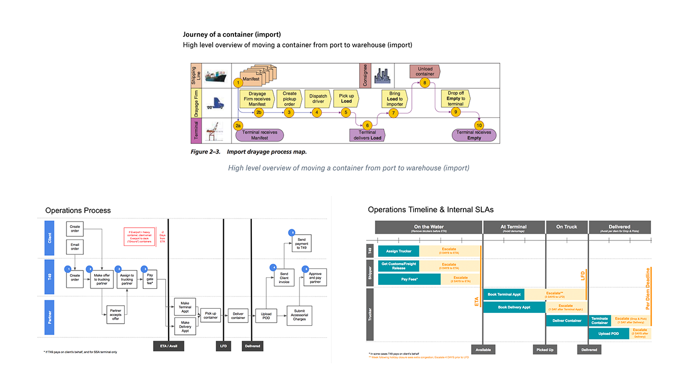
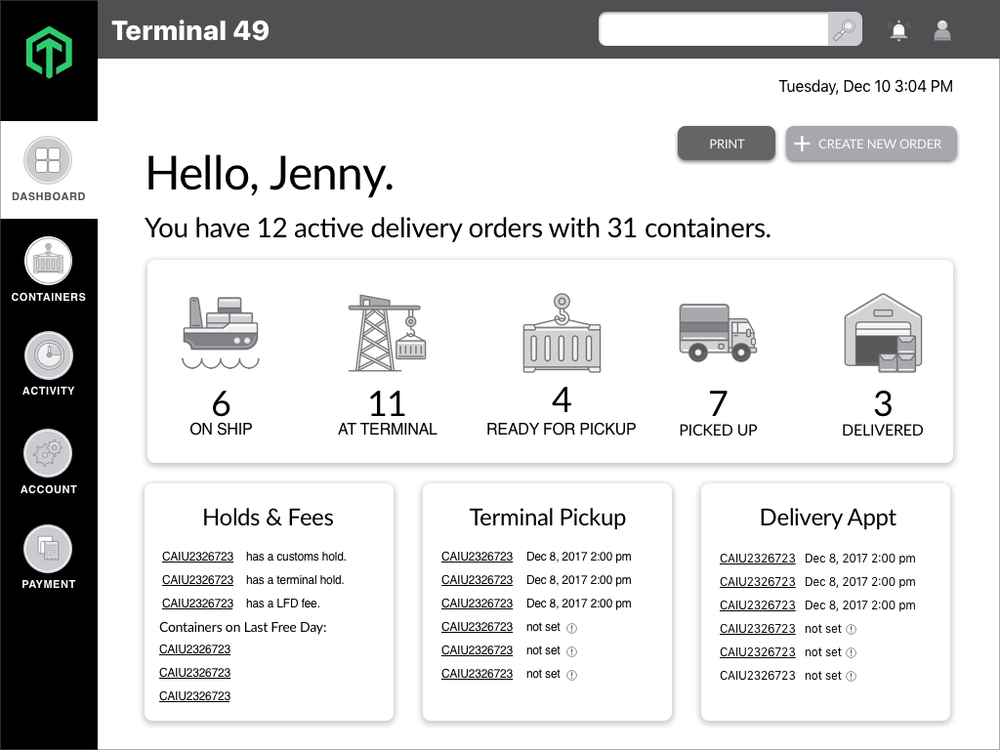
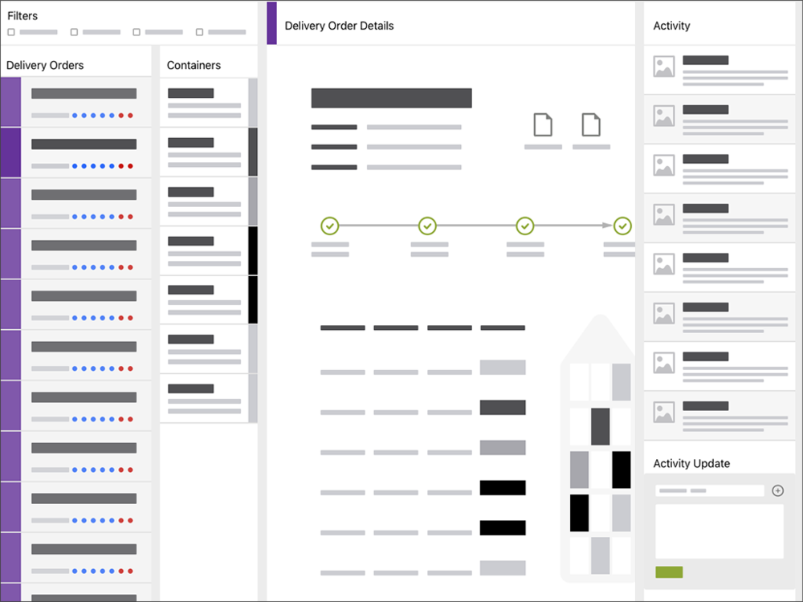
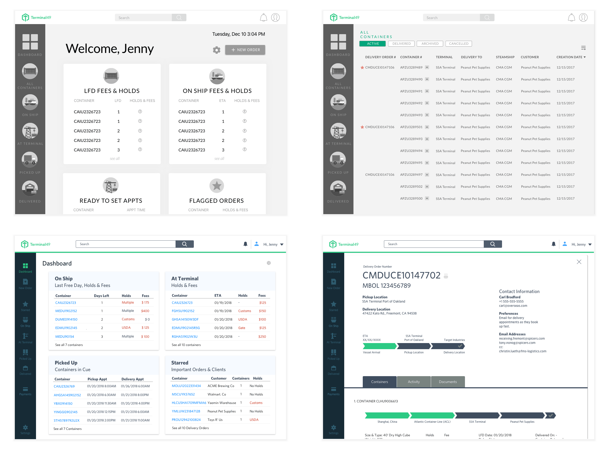

Terminal 49
Designing a dashboard interface to enhance workplace productivity and proficiency

The Client
Terminal 49 is a SaaS company that uses technology to improve efficiency and reduce costs for the $800b drayage industry.My Role
Product Designer (research to mid-fidelity prototype, style guide) on a team of 8 designersThe Challenge
How can we visually synthesize complex data to help different types of users get their work done more efficiently?
Traditionally, shipping industry logistics are primarily managed offline, with a slew of manual processes that create inefficiencies and frequent oversights. The users we were designing for had different needs and levels of tech-savvy, many of whom were not as comfortable adapting to new technology. We were tasked with helping these different users easily navigate through complex information on a dashboard interface in order to increase engagement and trust with Terminal 49.
Before & After
Dashboard - Before
Dashboard - After
Design Goals & Business Objectives
- Reduce cognitive overhead
- Increase engagement and trust
- Address the needs of different users with different job processes
- Reduce the need to exit the platform to find information elsewhere
- Create a dashboard that gives an overview of the most important info
- Be able to quickly drill down into detailed logistic information
- Perform actions within the platform that were previously performed outside
The drayage trucking industry: a cumbersome manual process
Much of the work managing logistics in this industry is manual, which leads to a lot of inefficiencies and, in turn, operational costs. Based on research and background materials provided by our client, we know that users often use time-consuming methods such as emailing, calling, excel spreadsheets and checking several different websites in order to track shipments, set appointments, manage holds & fees, and ensure on-time cargo deliveries. The aim of Terminal 49 is to use a technology platform to bring visibility and automation to this process. We wanted to design an interface where these manual processes could be streamlined into one workflow within the Terminal 49 platform.The complex operational process of the drayage industry
Five different job functions, one universal interface
The client provided five personas based on job function. Depending on the type of user and their role, they would need to see different information and perform different actions. We focused on 2 users, Jenny (import coordinator) and Maritza (manages trucking). In order to understand their day-to-day job roles, we ran through some task flows and journey mapping. An important part of understanding the users was keeping in mind that they may not be as comfortable or open to learning new technology.Pain points
- Information overload, no hierarchy of information presented
- Excessive email notifications
- No way to easily track orders and containers
- Difficult to complete the actions needed for their job within the platform
Exploring possible dashboard structures
During our ideation phase we explored different options for the structure of our dashboard. Our focus was on creating a main page with a snapshot view of the current orders, action items, and easy ways to delve deeper and find out more information about a specific order or container. We landed on 2 different structures that we expounded upon further. Option A was a modular, card-based design, and option B utilized nested columns and progressive disclosure. Ultimately, we decided to proceed with Option A based on our testing findings.Option A
Option B
Main considerations
- Customizable dashboard
- New order creation flow
- Action items such as uploading documents and setting appointments
- Ability to track orders
- Ability to easily sort & filter data
- Displaying data based on four stages of the shipping journey
- Highlight action items or things that need attention like holds & fees
- Progressive disclosure of information
Cycling through iterations based on feedback
Went through several different iterations based on our testing feedback, continuing to refine and tweak the interface. Notably, we added a flagging feature, less icon usage (instead using buttons for actionable tasks), and a global search bar.
Due to the confidential nature of the project, I am unable to share the final prototype.